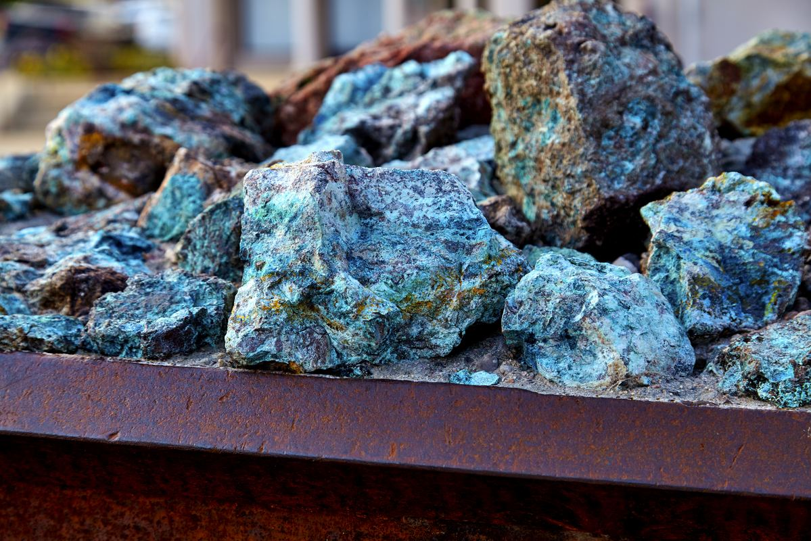
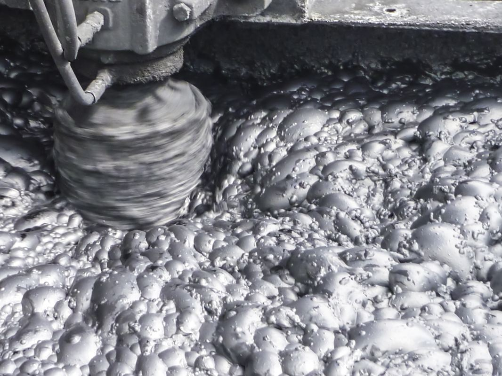
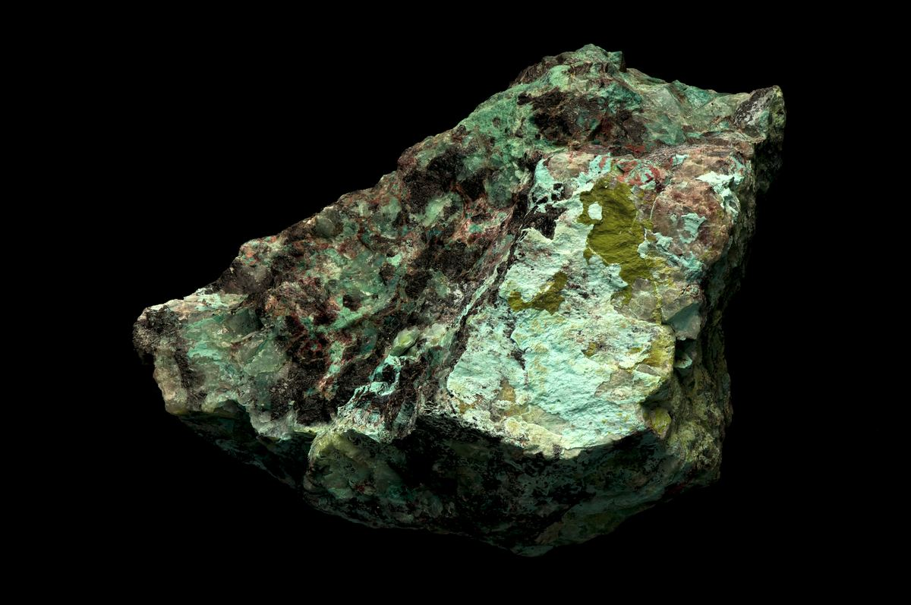
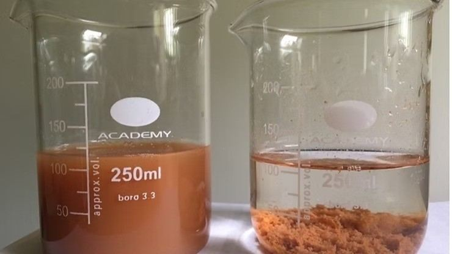

Nuestras Soluciones Integrales
Ingeniería avanzada y tecnología industrial para maximizar la eficiencia en minería.

1. Geometalurgia
Servicios de investigación y evaluación de los distintos procedimientos y componentes involucrados en el procesamiento de minerales que permiten optimizar las operaciones, maximizando así la recuperación tanto del mineral valioso como del recurso agua y a su vez disminuyendo los riesgos operacionales.

1a. Servicio de investigación de flotación
La optimización del rendimiento metalúrgico de celdas de flotación requiere de la búsqueda de perfiles de flujo de aire y alturas de espuma a lo largo del banco que sean compatibles con las condiciones necesarias para la circulación del flujo volumétrico de alimentación. La dispersión de aire es el proceso más relevante que ocurre en máquinas de flotación. Por ende, realizamos la medición simultánea y continua del flujo de gas, densidad aparente de la pulpa, y altura de espuma, además de mediciones puntuales frecuentes de densidad de pulpa, contenido de gas, y tamaño de burbuja en todas las celdas de un banco. Los resultados obtenidos nos permiten crear líneas de base operacional en bancos de celdas del circuito de flotación, que a su vez permiten mantener a la celda en su máximo punto operacional.

1b. Modelamiento y análisis de arcillas
La presencia de arcillas puede generar efectos negativos a la hora de concentrar minerales de cobre. En la conminución, disminuye la eficiencia de chancado y molienda debido al incremento de viscosidad. En flotación, se reduce la recuperación y ley de concentrado. En la lixiviación, provocan la formación de aglomerados y aumentan la viscosidad de la pulpa. Mediante la examinación mineralógica de alta precisión, podemos determinar que tipo de arcillas se encuentran presentes y recomendar soluciones que permitan reducir los costos operativos. Además, realizamos modelamiento de control de arcillas para evitar tragedias operacionales.

1c. Análisis de reactivos
En el área de reactivos, realizamos pruebas y estudios de floculantes y espumantes para así optimizar los procesos operacionales de espesamiento, flotación y recuperación de agua.


4. Automatización de procesos
Ofrecemos tecnología para realizar tareas que antes se hacían manualmente, con el objetivo de optimizar la eficiencia, reducir errores, ahorrar tiempo y costos operacionales.

4a. Lubricación automática
En la minería, muchos puntos de lubricación son difíciles de alcanzar o se encuentran en entornos peligrosos. Para ello, ofrecemos dispositivos de lubricación automática para una serie de diferentes aplicaciones. Desde dispositivos electromecánicos, electroquímicos hasta dispositivos con varias líneas de lubricación. Lubricadores automáticos de tecnología alemana que permiten un mayor ahorro de tiempo, menos tiempo de inactividad de las máquinas, menor consumo de lubricante, mayor vida útil y menor riesgo de contaminación e impurezas.

4b. Tecnología de monitoreo
Predicción de desgaste de revestimiento de molinos y chute de forma remota. Tecnología que recopila y gestiona datos de desgaste en tiempo real para optimizar y reducir el desgaste de revestimientos en futuras líneas de procesamiento, ahorrando costos operacionales. Esta tecnología patentada monitorea mientras el activo está en funcionamiento sin la necesidad de alimentación externa ni cables. Las "Pigging stations" realizan inspección, limpieza y mantenimiento de tuberías, facilitando el flujo simultáneo de múltiples productos y reduciendo los riesgos operacionales.

4c. Diseño y fabricación de circuito de fluidos
Ante la necesidad de facilitar la operación de limpieza en planta concentradora, diseñamos y elaboramos circuitos automatizados de plantas de floculante para relaves de emergencia y planta de molibdeno.